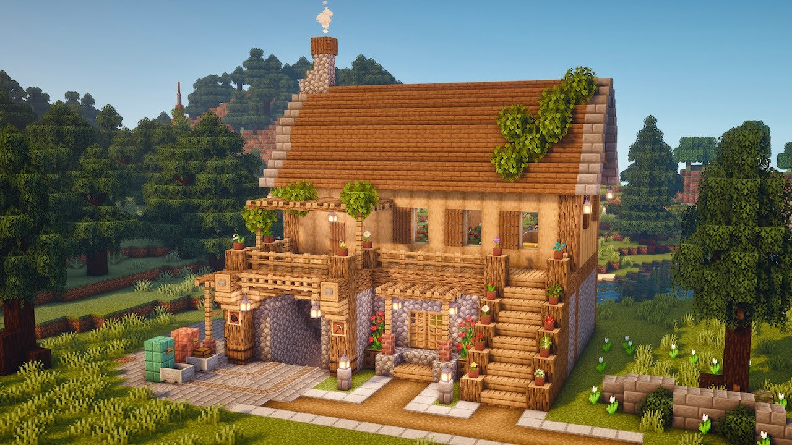
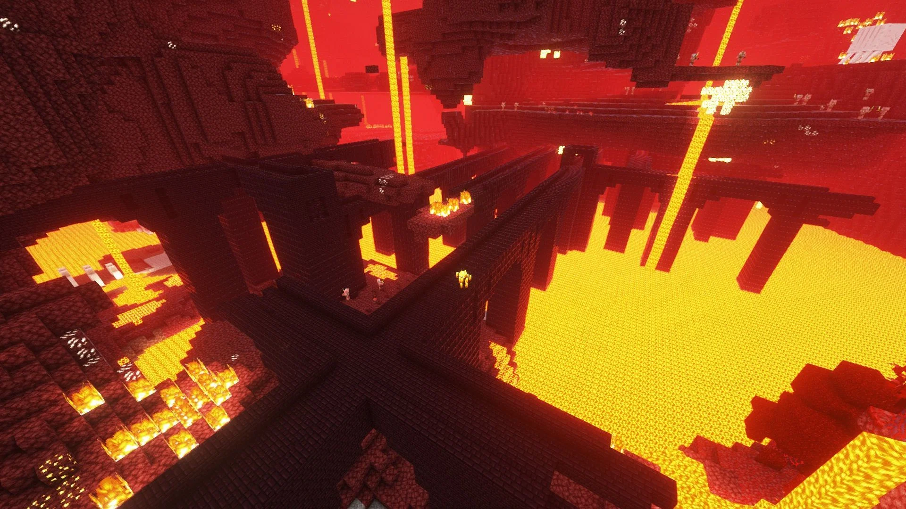
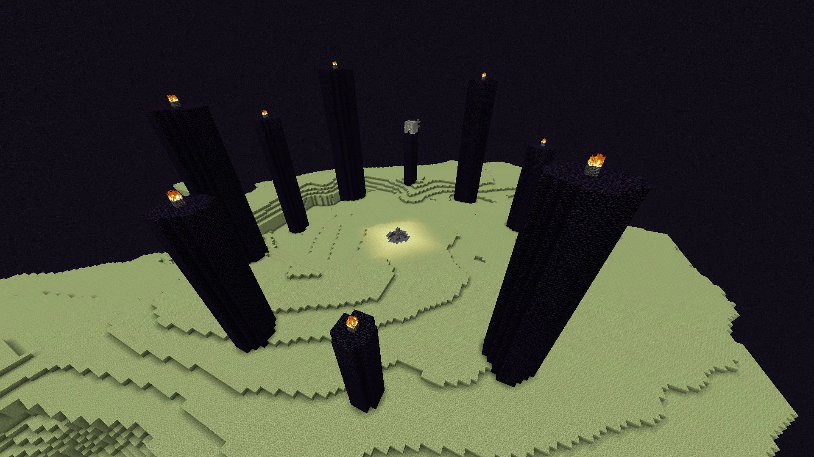

Welcome to Minecraft
Minecraft Worlds
The Overworld in Minecraft serves as the primary realm where players begin their adventures and embark on their journeys of exploration and creation. With its diverse biomes, ranging from lush forests and towering mountains to vast deserts and serene oceans, the Overworld offers a rich tapestry of landscapes to discover and conquer. It is a realm teeming with life, from the friendly villagers and playful animals to the menacing mobs that lurk in the shadows. In the Overworld, players can build and shape the land to their whims, constructing sprawling cities, majestic castles, or humble abodes amidst the ever-changing terrain. It is a realm brimming with possibilities, where every corner holds the promise of adventure and every sunrise heralds the beginning of a new day filled with discovery and wonder.
The Nether in Minecraft is a haunting and perilous dimension, juxtaposed against the serene landscapes of the Overworld. A realm of fiery pits, jagged terrain, and foreboding fortresses, the Nether presents a stark contrast to the familiar environments players are accustomed to. Here, the air crackles with heat and danger, while rivers of lava flow relentlessly through the cavernous expanses. Despite its inhospitable nature, the Nether is rich in valuable resources such as glowstone and quartz, tempting adventurers to brave its dangers in search of rare materials. However, the Nether is not without its challenges; ferocious mobs such as ghasts and blaze roam its corridors, ready to thwart the unwary traveler. Yet, for those brave enough to venture into its depths, the Nether offers untold riches and the promise of great adventure in a realm where danger lurks around every corner.
The End in Minecraft is a mysterious and ethereal dimension, shrouded in darkness and populated by the enigmatic Endermen. It is a desolate realm of floating islands suspended in a vast void, with the ominous End Portal serving as the gateway to this eerie domain. At the heart of the End lies the formidable Ender Dragon, a formidable foe that guards the realm and must be defeated by brave adventurers seeking to conquer this otherworldly land. However, beyond the dragon's lair lies a hidden treasure awaiting those who dare to explore further: the End Cities. These sprawling metropolises, built atop the End Islands, are filled with rare loot, valuable resources, and perilous challenges. Navigating the treacherous terrain and battling the fearsome Shulkers that inhabit the End Cities, players can claim valuable rewards and uncover the secrets of this mysterious dimension. The End and its cities stand as a testament to Minecraft's boundless sense of exploration and discovery, offering daring players the ultimate challenge and the promise of untold riches.
  